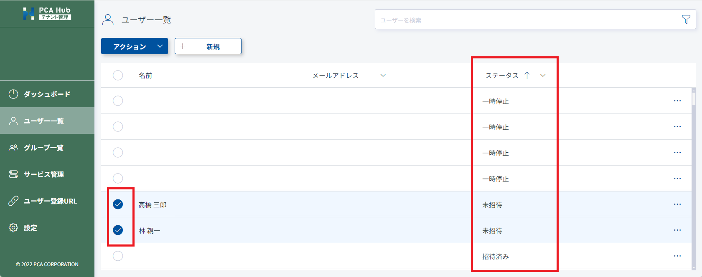
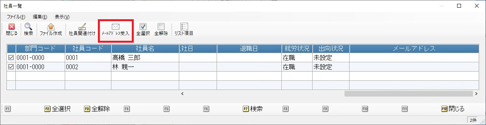
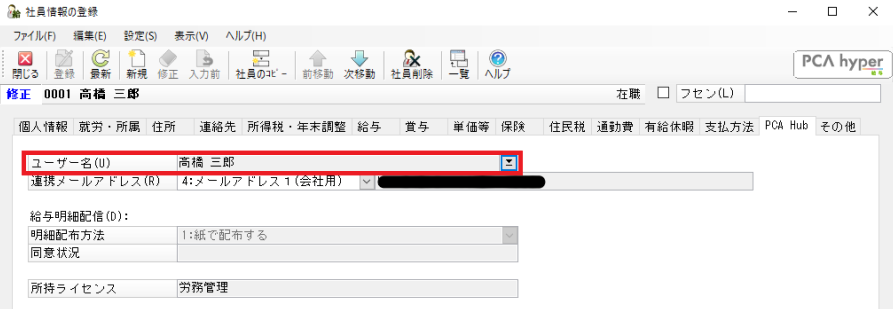
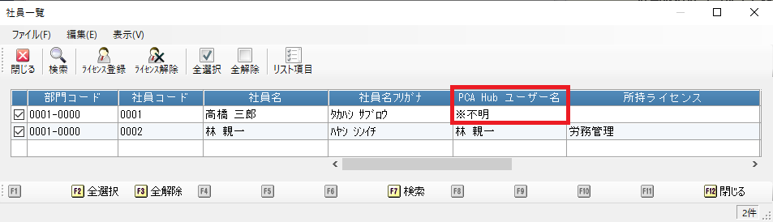

サービス利用のための設定を行う
PCA Hub 労務管理を利用するため設定方法です。
PCA給与シリーズ にてあらかじめ連動設定を行う必要があります。
PCA給与シリーズの「随時」-「PCA Hub連動設定」から連動設定を行います。
制限
-
PCA Hub との連動設定は PCA Hub 労務管理のシステム管理者のみが行うことができます。
サービスの URL を設定する
(1) 「有効サービス」のチェックをONにして「URL」欄にご契約されている PCA Hub のURLを入力します。
さらに ［移動］ ボタンを実行します。
(2) 「移動」ボタンを実行して「ブラウザからのログイン」を実行します。
(3) 表示されたブラウザページにて PCA Hub へのログインを行います。

(4) PCA Hub の認可画面にて、要求内容を確認して「同意する」を実行します。

社員と PCA Hub のアカウントを紐づける
テナント管理者が操作する場合は PCA給与シリーズから社員のアカウントを作成する をご確認ください。
テナント管理者がPCA給与シリーズから社員のアカウントを作成する を「ユーザー登録とライセンス付与を行う」を選択して実行した場合、こちらの操作は必要ありません。
画面イメージは、テナント管理者とPCA Hub 労務管理システム管理者が別の場合のイメージになります。
社員自身にPCA Hub アカウントを登録してもらい、メールアドレスを受け入れる
PCA Hub アカウントの操作は、テナント管理者が行うことができます。
労務管理システム管理者は、社員と PCA Hub のアカウントの紐づけ操作を行います。
1.テナント管理者による操作を行います。
(1) テナント管理サイトのユーザー登録URLにアクセスします。
操作方法は URLを利用したユーザーの追加 をご確認ください。
対象社員に自身のアカウントを登録していただきます。
(2) テナント管理サイトからの招待メール送信します。
-
テナント管理サイトのユーザー一覧にアクセスします。
-
ステータスで並び替えを行い、「未招待」のユーザーを選択して招待メールを送信します。

2.労務管理システム管理者による操作を行います。
(1) PCA給与シリーズの「PCA Hub 連動設定」-「社員一覧」メニューを実行します。
(2) 「メールアドレス受入」メニューを実行します。
Hub ユーザー名「未設定」で社員を絞り込み、メールアドレスの受入を行います。
-
PCA給与シリーズの社員マスターにメールアドレスが設定されます。
-
社員とPCA Hub アカウントの関連付けも同時に処理されます。

(3) インポート用の CSV ファイルを作成するを行います。
ポイント
-
手順1-2の招待メール送信は手順1-1の後、いつ行っていただいても問題ありません。
-
手順2-3ではライセンス付与メールだけが送信されます。
社員と PCA Hub のアカウントの関連付けを行う
メールアドレスの受入を行った場合、こちらの操作は不要です。
(1) 「社員一覧」メニューを実行します。
(2) 社員一覧画面にて「社員関連付け」メニューを実行します。
(3) 正常に紐づけができたことを確認します。
ポイント
-
チェックがONになっている社員を対象に、メールアドレスにて関連付けを行います。
-
PCA給与シリーズの社員マスターにメールアドレスが設定されている必要があります。
-
社員マスターに登録されているメールアドレスは、PCA Hub アカウントに登録されているメールアドレスと一致している必要があります。
-
PCA給与シリーズの「社員」-「社員登録」-「社員情報の登録」にて社員個別に関連付けを行うことも可能です。
 -
社員一覧で、PCA Hub ユーザー名が「不明」の場合、アカウントの再登録を行う必要があります。
社員のアカウントを作成する を参考に、PCA Hub ユーザー名が「不明」の社員のアカウント作成を行いますす。
インポート用の CSV ファイルを作成する
既に PCA Hub アカウントが作成されている場合、操作は必要ありません。
PCA Hub 労務管理システム管理者は、CSVファイルを作成し、テナント管理者に社員アカウントの作成を依頼します。
(1) 「社員一覧」メニューを実行します。
(2) 社員一覧画面にて「ファイル作成」メニューを実行します。
(3) ユーザー登録とライセンス付与を同時に行うか選択して実行します。
ポイント
-
CSV ファイルは対象の社員100名ごとに分割して出力されます。
-
CSV ファイルのフォーマットについては PCA Hub ユーザー CSV ファイルフォーマット をご覧ください。
-
ユーザーインポートについては CSV ファイルからアカウントを作成する をご覧ください。
-
ユーザーインポート後の操作については、社員と PCA Hub のアカウントを紐づける をご覧ください。
PCA給与から社員情報をアップロードする
クライアントサイトの利用には、PCA Hub アカウントに紐づけられている社員情報のアップロードが必要です。 PCA給与から社員情報をアップロードするをご覧ください。